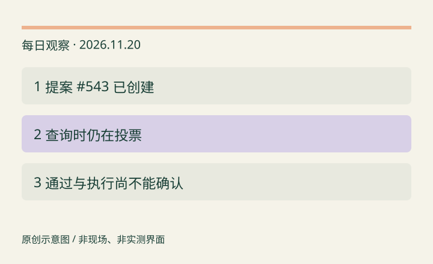

11月17日创建 · 11月20日05:12查询
Aave 的 USAT 上架提案仍在投票，不是已经开放借款
Aave 关于在 Avalanche 的 V4 Core 接入 USAT 的 #543 提案，截至北京时间11月20日05:12的查询仍显示“Open for voting”，法定票数尚未达到。提案拟把 USAT 设为可借资产，但不作为 Main Spoke 和 Ethena Ecosystem Spoke 的抵押品；配置中的固定 1 美元价格是协议定价安排，不能当成市场成交价保证。已创建提案、投票通过、执行配置和用户能借到资产，是不同节点。本条只报道当前治理进度，不写成已上线，也不把其他链的发行与赎回条件自动套到 Avalanche。投票页 ↗ · 论坛记录 ↗
来源与日期
- app.aave.com ↗ · 11月17日创建；页面动态状态
- governance.aave.com ↗ · 2026-11-17回复